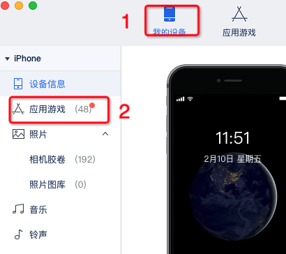
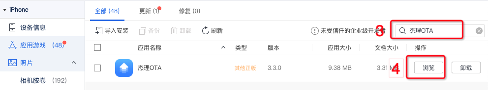
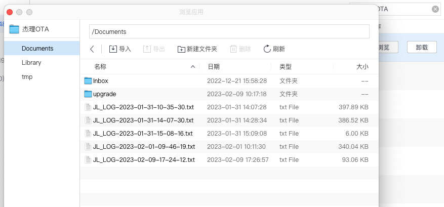

杰理OTA SDK
常见问题答疑
常见问题答疑
1. 前言
本文档主要记录比较经常遇到的问题，统一进行答疑，方便快速开发。开发者可以先检索已有的问题是否符合你遇到的问题；如果是新的问题，请按照以下步骤进行提问，我们将尽快解答。
描述问题的情况以及测试环境，请参考提问格式：
提供打印日志，输出方式请参考测试调试，最好可以提供现象截图或视频
提问格式
问题描述: XXXXXX
测试环境: 固件: ACxxx_xxx_SDK_Vxxx 软件: JL_OTA_Vxxx
问题标签: SDK接入 资源更新(固件升级) 其他
复现步骤: 1. xxxx 2. xxxx 3.xxxx
复现概率: 必现, 1/20, n / m
公版Demo是否复现: 是，否
问题出现时间段: yyyy/MM/dd hh:mm - yyyy/MM/dd hh:mm 例如: 2022/05/28 17:00 - 2022/05/28 17:02
备注: xxxx
重点: 开发前，请阅读杰理OTA SDK开发文档
2. 常见问题
2.1. 自定义蓝牙接入时，如何使用设备的广播包信息？
利用系统提供的搜索蓝牙设备接口，从回调中获取广播包信息操作如下：
-(void)centralManager:(CBCentralManager *)central
didDiscoverPeripheral:(CBPeripheral *)peripheral
advertisementData:(NSDictionary<NSString *,id> *)advertisementData
RSSI:(NSNumber *)RSSI
{
NSString *ble_name = advertisementData[@"kCBAdvDataLocalName"];
//NSLog(@"---> Found Name:%@ Rssi:%@",ble_name,RSSI);
if (ble_name.length == 0) return;
NSData *ble_AD = advertisementData[@"kCBAdvDataManufacturerData"];
NSDictionary *info = [JL_BLEAction bluetoothKey_1:_filterKey Filter:advertisementData];
NSString *ble_addr = [JL_BLEAction otaBleMacAddressFromCBAdvDataManufacturerData:ble_AD];
/*--- 过滤蓝牙设备 ---*/
BOOL isOk = [info[@"ISOK"] boolValue];
//设备类型
JL_DeviceType deviceType = [info[@"TYPE"] intValue];
//转换成JL_EntityM对象
NSMutableDictionary *mDic = [NSMutableDictionary new];
[mDic setObject:peripheral forKey:@"BLE"];
[mDic setObject:rssi forKey:@"RSSI"];
[mDic setObject:info?:@{} forKey:@"INFO"];
JL_EntityM *entity = [JL_EntityM changeToEntity:mDic];
}
当完成转换时，即可获得以下的属性值
@property(strong,nonatomic) NSString *mUUID;
@property(strong,nonatomic) NSNumber *mRSSI;
@property(readonly,copy,nonatomic)NSString *mItem;
/**
* mType值说明：
* -1：传统设备
* 0：AI音箱
* 1：TWS
* 2：数码充电仓
* 3：普通耳机
* 4：声卡类型
* 5：手表类型
*/
@property(assign,nonatomic) JL_DeviceType mType;
@property(assign,nonatomic) BOOL isExclusive;
@property(assign,nonatomic) BOOL isBound;
@property(assign,nonatomic) BOOL isEdrLinked;
@property(assign,nonatomic) BOOL isCharging;
@property(assign,nonatomic) BOOL isCharging_L;
@property(assign,nonatomic) BOOL isCharging_R;
@property(assign,nonatomic) BOOL isCharging_C;
@property(assign,nonatomic) uint8_t mPower;
@property(assign,nonatomic) uint8_t mPower_L;
@property(assign,nonatomic) uint8_t mPower_R;
@property(assign,nonatomic) uint8_t mPower_C;
@property(strong,nonatomic) NSString *mVID;
@property(strong,nonatomic) NSString *mPID;
@property(strong,nonatomic) NSString *mEdr;
@property(strong,nonatomic) NSString *mBleAddr; //OTA设备需要
@property(assign,nonatomic) uint8_t mChipType; //0：690x 1：692x 2：693x
@property(assign,nonatomic) uint8_t mProtocolType; //默认0x00
/**
0x00 - dismiss 不显示弹窗
0x01 - unconnected 经典蓝牙未连接
iOS : 不显示电量，请手动连接XXX
Android：不显示电量，显示连接按钮
0x02 - connected 经典蓝牙已连接
iOS：判断已连接的经典蓝牙名是否一致，若未连接或蓝牙名不一致，
显示“设备已被占用”。若一致，显示电量等信息。
Android：判断已连接的经典蓝牙Mac是否一致，若未连接或蓝牙Mac不一致，
显示“设备已被占用”。若一致，显示电量等信息。
0x03 - connecting 设备正在自动回连
Android 和 iOS 显示“设备正在自动回连 ”
0x04 - connectionless 设备不可连接（需要按下配对按键）
Android 和 iOS 显示配对操作方式
*/
@property(assign,nonatomic) int8_t mScene;
@property(assign,nonatomic) uint8_t mSeq; //Seq 每次开机会加 1，用于app区分是否同一次开机
@property(assign,nonatomic) uint8_t mTWS_Paired; //TWS配对标识，0:未配对 1:已配对
@property(assign,nonatomic) uint8_t mTWS_Cap; //0:关盖 1:开盖
@property(assign,nonatomic) uint8_t mTWS_Mode; //0:充电模式 1:发射模式
@property(assign,nonatomic) uint8_t mHeadsetMaster; //主从标识 (0:从机， 1:主机)
@property(assign,nonatomic) uint8_t mHeadsetLinkEnable; //连接标识
这里部分属性值会根据设备类型来判断是否具备实际实用意义
2.2. 为什么BLE握手认证执行了两次或者多次，导致BLE握手失败？
设备必须固定有一个BLE服务号，和2两个读写特征值（分别是读和写），来实现数据交互。
目前SDK使用的默认服务号为AE00，写特征是AE01，读特征AE02，保证设备端有一组AE00、AE01、AE02且不能重复。
可以添加其他服务号和特征值，但不要与SDK正在使用的服务号和特征值名字重复。
2.3. 为什么OTA升级结束但升级结果是失败？
参考结果提示：
/--- 0x01 升级数据校验失败 ---/
/--- 0x02 升级失败 ---/
/--- 0x03 加密Key不对 ---/
/--- 0x04 升级文件出错 ---/
/--- 0x05 uboot不匹配 ---/
/--- 0x06 升级过程长度出错 ---/
/--- 0x07 升级过程flash读写失败 ---/
/--- 0x08 升级过程指令超时 ---/
NSLog(@"【%@】OTA --> Fail: %d",self.mBLE_NAME,otaSt);
如果出错是0x03或者0x04，请确保固件升级文件是否设置了加密key；其他出错，如注释解析。 有其他问题疑问也可以将APP和固件端的log发给杰理。
2.4. APP断开重连ANCS设备，回连失败怎么处理？
1、ANCS设备连接APP就算APP断开BLE，但设备的BLE依然会与iPhone保持后台连接。那么此时在APP中搜索设备BLE是搜不到，需要用通过UUID回连设备，可以暂存上次连接时的UUID。
2、就算连接上了BLE握手配对失败如何处理？那么请将固件Log发送给我们的杰理OTA固件同事。
2.5. 升级过程出现BLE断开或者超时
此时APP的Log相当于停止在某个0xe5的命令之中：
(GET)–>JL_CMD Opcode:0xe5 SN:1 Reply:1 Param:(6)000000000200
这种情况是固件端没有继续发0xe5命令来取数据（0xe5携带着seek和length，APP会根据这两参数从固件的升级文件里找到对应数据发回给设备）。
或者还伴随着BLE断开的打印，也请将App和固件Log发给杰理。
2.6. 如何导出APP中的日志信息
安装爱思助手
手机连接电脑以及打开爱思助手

按照步骤选中内容

选中对应的日志，选择导出。
